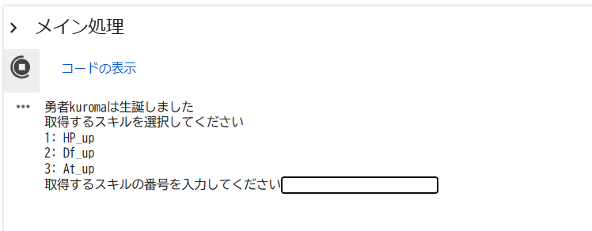
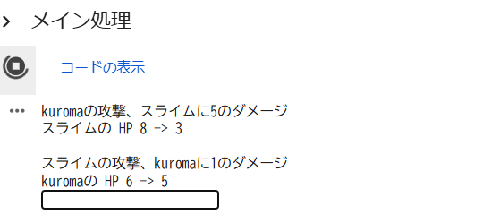
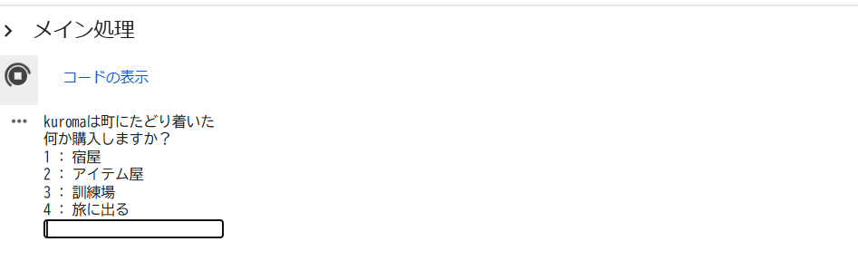

Portfolio
プロフィール
所属
大阪公立大学工業高等専門学校 総合工学システム学科 知能情報コース 2年生
現代音楽部
フォークギター部
得意な言語
Python
趣味
ギター
西洋史
twich,youtube
ゲーム(ローグライク,シミュレーション)
読書
製作物
本ポートフォリオ
二年次後期の自由課題として制作。
HTML/CSSで制作
Githubはこちら
オートバトル制のRPG風ローグライク
二年次前期の自由課題として制作。
Pythonで制作
Githubはこちら
GoogleColaboはこちら



学習支援ツール
総合課題実習においてチームで制作を行い、高専祭で展示した。
制作中
JavaScript, HTML/CSSで制作
リンクはこちら
スキル
自主的に学習した
Python
JavaScript
HTML/CSS
授業で学習した
Scratch
Deeds-DCS
MakeCode for micro:bit
Arduino
ArduinoIDE
Tinkercad
C++
学習したい
Unreal Engine5
Unity
GameMaker
歴史能力検定(世界史)
TOEIC
コンタクト
メールアドレス : kuroma.un96@gmail.com
github : https://github.com/kuroma514